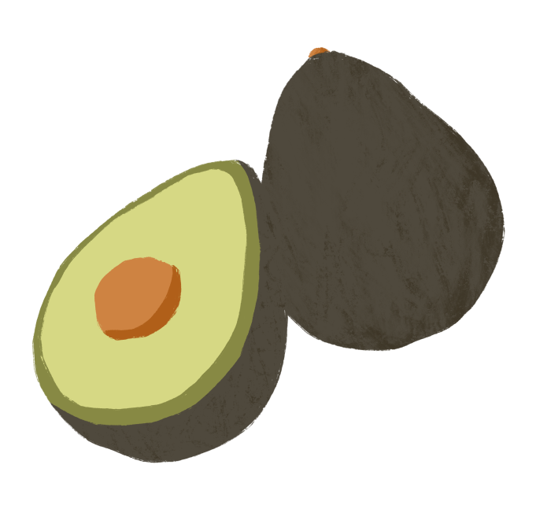

What is Avocado?
Avocado, also known as alligator pears or butter fruit, is a sizable fruit that generally has a rough,
green outer skin, greenish or yellowish flesh, and a large brownish seed in the middle. It was
particularly fatty with a buttery consistency, and a flavor that is often described as mildly nutty and
creamy.
The avocado tree is an evergreen, medium-sized tree belonging to the Laurel family. It is native to the
Western Hemisphere from Mexico south to the Andean regions, and was first cultivated by Mesoamericans
more than 5,000 years ago.
